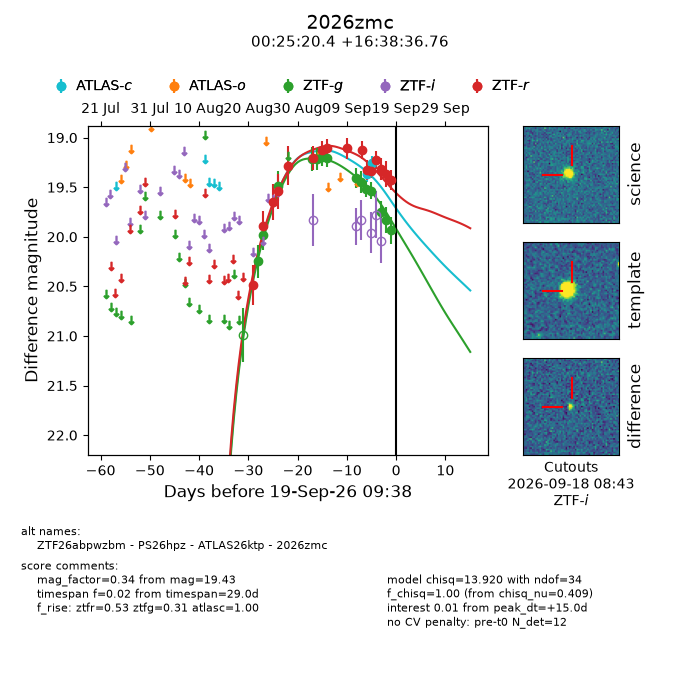
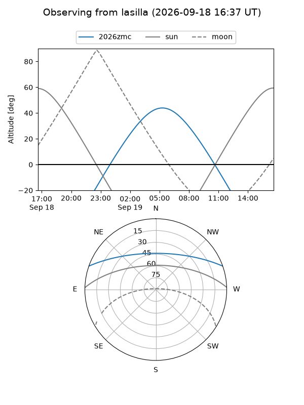
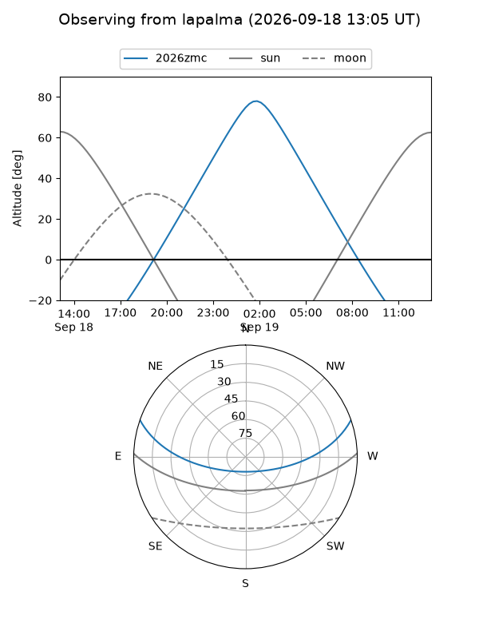
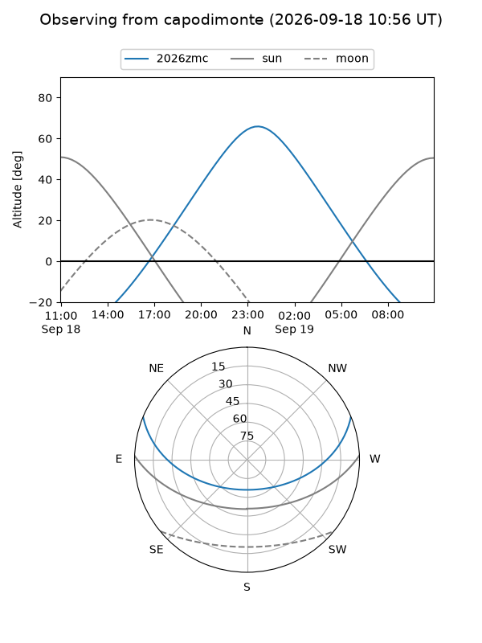
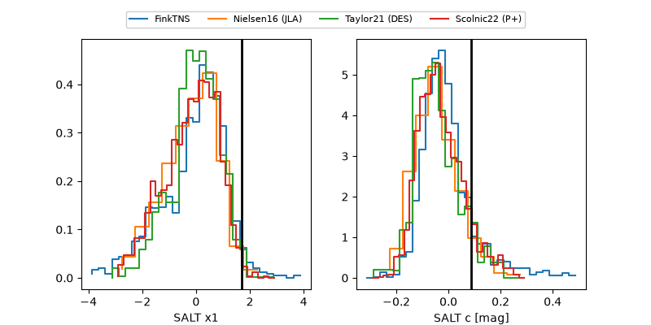

2026zmc
Target 2026zmc at 2026-09-19 09:40
Aliases and brokers:
FINK-ZTF: ztf.fink-portal.org/ZTF26abpwzbm
Lasair-ZTF: lasair-ztf.lsst.ac.uk/objects/ZTF26abpwzbm
ALeRCE-ZTF: alerce.online/object/ZTF26abpwzbm
YSE-PZ: ziggy.ucolick.org/yse/transient_detail/2026zmc
TNS name: wis-tns.org/object/2026zmc
Direct TNS query: direct search
alt names
ZTF26abpwzbm (ztf,fink_ztf)
2026zmc (tns,yse)
ATLAS26ktp (atlas)
PS26hpz (panstarrs)
Coordinates:
equatorial (ra, dec) = 6.3349,+16.64354
equatorial (HMS+DMS) = 00:25:20.37,+16:38:36.76
galactic (l, b) = (113.9523,-45.77267)
Flags:
TNS type: nan
peak dt: +15.0
Photometry:
last atlasc=19.26, ztfg=19.94, ztfr=19.43
2 atlasc, 14 ztfg, 16 ztfr detections
Lightcurve

Visibility



Additional plots
